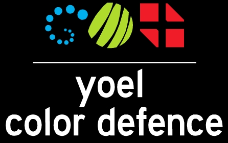

<!DOCTYPE html>
<html>
<head>
    <meta charset="UTF-8" />


	<title>game design</title>

 	

	<style>
	h3{margin: 0;}
		#y_game
		{
			position:relative;
			background: #000 none repeat scroll 0 0;
			overflow:hidden;
			width:300px;
		    height:500px;
			
		    color:white;
			font-size:2em;
			
		    border:10px solid #333;
		    margin:30px auto;
		    box-shadow:5px 5px 10px #444;
			transform-style: preserve-3d;
			/*no text select*/
			-webkit-touch-callout: none;
			-webkit-user-select: none;
			-khtml-user-select: none;
			-moz-user-select: none;
			-ms-user-select: none;
			user-select: none;
			
			
		}
	
		.entity
		{
			position:absolute;
			background:blue;
			height:50px;
			width:50px;
			-webkit-transform-style: preserve-3d;
			backface-visibility: hidden;
			-webkit-transform: translate3d(0,0,0); 
			transform: rotate(0deg);
			-moz-transform:  rotate(0deg);
			
			
		}
		.hitbox
		{
			position:absolute;
			border:solid 1px red;
		}
		
		.game_screen img{width: 300px;}
		.game_screen
		{
		    margin-top: 73px;
			background:rgba(0, 0, 0, 0);
		}
	   .game_manager
		{
			background:rgba(0, 0, 0, 0);
		}
		
		.y_player
		{
			
		}
		.y_base
		{
			background-color:white;
		}
		.y_powerup
		{
			border:solid 1px white;
		}
	</style>
</head> 
 
<body> 

	<div id="y_game"></div>

	
	<script src="js/jquery-1.7.1.min.js"></script>
	<script src="js/jquery-ui.min.js"></script>
	<script src="js/yoel_dom_game.js"></script>
	<script src="js/player.js"></script>
	<script src="js/base.js"></script>
	<script src="js/enemy.js"></script>
	<script src="js/powerup.js"></script>
	<script src="js/base.js"></script>
	
	<script>
	
	//game main
	function main()
	{
		//worlds
		window.start_world = new y_world("y_game");
		window.game_world = new y_world("y_game");
		window.end_world = new y_world("y_game");
		//init engine
		yoel_engine_p.current_world = window.start_world;
		yoel_engine_p.init();
		
		//game screens
		start_screen = new  game_screen("start");
		start_screen.html = "click to start game";
		
		end_screen = new  game_screen("end");
		end_screen.html = "game over";
		
		//add screens to worlds
		window.start_world.add(start_screen);

		window.end_world.add(end_screen);
		
		//game menger
		var gm = new game_manager(100,100,0,3);
		var player = new y_player(100,100,0,3);
	
		window.game_world.add(gm);
		window.game_world.add(player);
		
		//end world and game_world not active at the start
		window.end_world.not_active();
		window.game_world.not_active();

	
	}


 
 
 
 ////////  game_manager////////
var game_manager = function(x,y,z,speed,mesh)
{ 
 this.did_init = false;
 this.type = 'game_manager'; 

 y_entity.call(this,x,y,z,speed,mesh); 
 this.spawn_timer =  new y_timer(2);
this.explode_sound = new y_sound("sound/ludom darer.wav",.12,true);

} 
 
 game_manager.prototype= new y_entity(); 
 
 var game_manager_p = game_manager.prototype; 

 
 //static vars 
 game_manager_p.game_over =false;
 game_manager_p.bases =3;
 
 game_manager_p.init = function()
{

	 if(!this.did_init)
	 {
		//lol 
        this.explode_sound.play();
		
		this.did_init=true;
		return;
	 }//if did init escape 

 }//end init 

 game_manager_p.update = function()
{
	 this.init();
	 this.game_over_chack();
	 this.spawn();
	 this.hud();
	 y_entity_p.update.call(this); 

 }//end update

game_manager_p.spawn = function()
{
	//update timers
	this.spawn_timer.update();

	
	//if score is bigger then num and spawn timer is finished do somthing
	if( this.spawn_timer.finished)
	{
		x =  y_random(0,300)
		enemy = new y_enemy(x,-100,0);
		window.game_world.add(enemy);
		//reset timer
		this.spawn_timer.reset();
	}

}//end spawn


game_manager_p.game_over_chack = function()
{
	if(game_manager_p.game_over)
	{
		game_manager_p.game_over = false;
		y_world_p.change_world.call(window.game_world,window.end_world);
		
	}

}//end game_over

game_manager_p.hud = function()
{


	//show score
	//$(".yscore").text("");//add text to yscore
	
}//end hud

game_manager_p.reset = function()
{
	//create bases
	for(i=0;i<=2;i++)
	{
		base = new y_base(110*i+15,390,0);
		window.game_world.add(base);
	}
	//remoe all enemys
	var enemys = y_entity_p.get_by_type.call(this,"y_enemy");
	var elen = enemys.length;
	var world = {'world':window.game_world} 
	for(var i = 0; elen>=i ; i++)
	{
		if(enemys[i])
		{
			yremove(world,enemys[i]);
		}
	}
	game_manager_p.bases = 3;
}//end reset


 //////// end game_manager////////


 ////////  game_screen////////
var game_screen = function(name)
{ 
	 this.did_init = false;
	 this.type = 'game_screen'; 

	 y_entity.call(this,0,0,0,0,""); 
	 this.name = name;
	 this.html = "";

	 this.width = 300;
	 this.height = 300;
	 yw_h(this,this.width,this.height);
} 
 
 game_screen.prototype= new y_entity(); 
 
 var game_screen_p = game_screen.prototype; 
 
 game_screen_p.init = function()
{

	if(!this.did_init)
	{
		//click chack init
		y_entity_p.click_chack.call(this);
	
		html = this.html;
		
	
		//do elemnt id
		id="#"+this.id;
		$(id).hide();
		$(id).fadeIn(1000);
		//img and headline
		$(id).append(""+html)
	
		this.did_init = true;
		return;
	}//if did init escape 

 }//end init 

 game_screen_p.update = function()
{
	 this.init();
	 this.click();
	 y_entity_p.update.call(this); 

 }//end update 
 
 game_screen_p.click = function()
{

	if(this.is_clicked){}else{return;}//exit if no click
	
	if(this.name=="start")
	{
	
		
		//fade out and change game world
		$("#"+this.id).fadeOut(1000,this.go_to_game);
		
	}
	else
	{
	
		$("#"+this.id).fadeOut(1000,this.go_to_start);
	}
}//end click

game_screen_p.go_to_game = function()
{

	//change world to game world
	
	y_world_p.change_world.call(window.start_world,window.game_world);
	game_manager_p.reset();
	game_manager_p.game_over = false;
	
	//reset game
	game_manager_p.reset();
	
}//end go_to_game
game_screen_p.go_to_start = function()
{
	
	y_world_p.change_world.call(window.end_world,window.start_world);
	game_manager_p.game_over = false;
}//end go_to_game


 //////// end game_screen////////


	//main
	main();
	</script>

</body> 
</html>